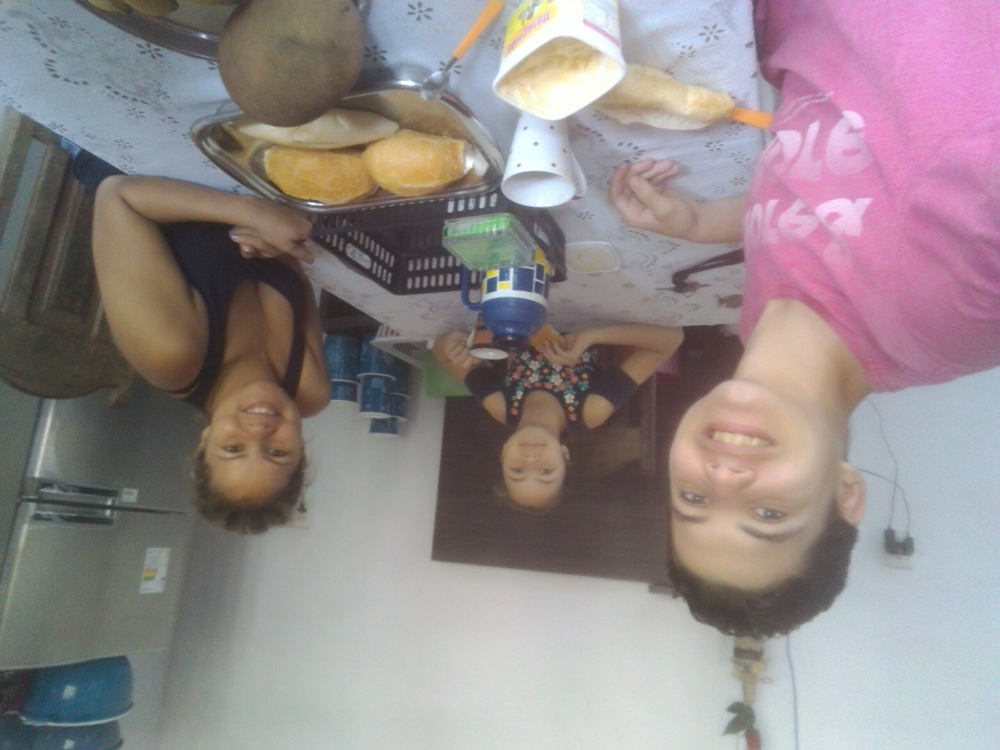
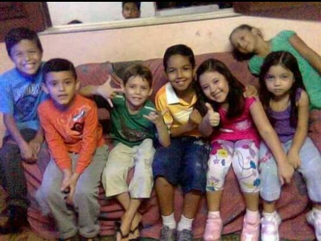
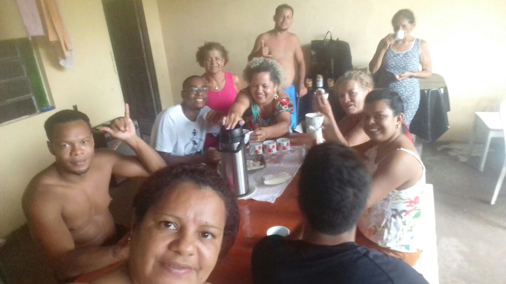

Minha família é basicamente meu porto seguro, ela que me da forças e inspiração para continuar batalhando pelos meus sonhos. Tenho 3 famílias, a Raiol, a Ribeiro e Paiva. A primeira e a segunda eu tenho desde o nascimento, e a terceira eu adquirí ao longo da vida.
A Raiol e a Paiva são famílias grandes, já a Ribeiro é um pouco menor.